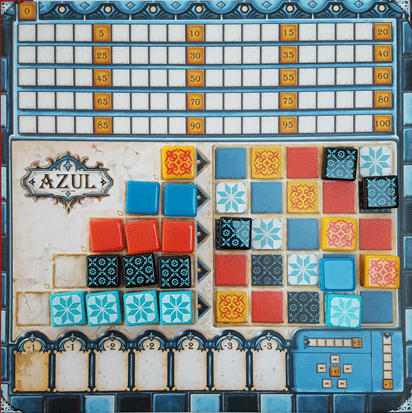

In our Azul review, Board Crazy studies this new and interesting abstract game designed by Michael Kiesling and published by Plan B Games. In Azul, players draft decorative tiles and attempt to create the most impressive wall pattern for King Manuel’s palace. Keep reading to see what we thought of Azul!
D reviews Azul

(Author’s note: this review is meant to accompany our gameplay video and will not go in-depth on the game’s rules. If you’re interested in learning how the game is played, please watch the video. It’s not bad.)
Azul is definitely a game that comes with some high expectations. Before you even open the box, you see the name of Michael Kiesling, the prestigious German board game designer with two Spiel des Jahres awards to his name. And then once you open it, you get the immediate sense that a fair amount of money has gone into the creation of this game, with its bright, attractive player boards and its 100 high quality, unique tiles. So does Azul live up to expectations? I would say yes, mostly.
Mechanically, the game doesn’t exactly reinvent the wheel. Azul revolves around set collection and, of course, tile building. The order in which you collect tiles from the factories and place them on your wall make up the bulk of the strategy. As I’m sure the others will mention below, the gameplay is similar to that of Roll Player, a game we played and reviewed here several months ago. Azul is a bit lighter and less reliant on theme than Roll Player, but the way you complete your board has a similar feeling. I would say Azul is a slightly more successful game, however, thanks in large part to its relative lightness. Roll Player has a lot of elements to keep track of, and it can be difficult to ascertain exactly what the clearest path to victory is. Azul is more focused, and it’s easier to develop a successful strategy early on.
There is also a lower degree of luck involved here. It’s still present of course, as you never know what tiles are going to be available to you every round, but I think it’s fairly easy to adjust your strategy on the fly. The obvious drawback to this more structured game design is that it isn’t as obviously replayable. Fortunately, this was accounted for. The back side of the player boards features a plain, gray wall without the preset pattern on the main side. This allows you to replay the game with each player making different designs instead of everyone always following the same pattern. This should keep things fresh if you play Azul enough that obvious strategies start to form.
Azul isn’t a game with any major flaws that come to mind. The worst thing I could say about it is that it isn’t the most interesting game I’ve ever played. It’s not boring, but as a fan of abstract games I would take some other games of the genre that we’ve played over this, such as Quantum and Onitama. Still, Azul is an easy game to recommend to board gamers of all ages. If what you see in our video intrigues you, definitely check it out.
D’s Rating: Four Stars out of Five.
Will reviews Azul
 If
you’ve read any of our previous reviews of abstract games (Onitama,
Element, etc.), then you know that I tend to have mixed feelings toward
them. While I appreciate their elegance and simplicity, I often find
abstract tabletop games are lacking something. For instance, some of
these games lack tension, while others are missing worthwhile player
interaction. It’s for this reason that I came into Azul with a balance
of hope and skepticism, since this game is undoubtedly abstract. When we
were done playing, I was pleased by the fun that I had. But then I got
to thinking and realized, Azul is just like its counterparts – it’s
missing something.
If
you’ve read any of our previous reviews of abstract games (Onitama,
Element, etc.), then you know that I tend to have mixed feelings toward
them. While I appreciate their elegance and simplicity, I often find
abstract tabletop games are lacking something. For instance, some of
these games lack tension, while others are missing worthwhile player
interaction. It’s for this reason that I came into Azul with a balance
of hope and skepticism, since this game is undoubtedly abstract. When we
were done playing, I was pleased by the fun that I had. But then I got
to thinking and realized, Azul is just like its counterparts – it’s
missing something.
Before I start delving into the negatives, I want to point out that I appreciate that Azul knows what it is. Its designer, Michael Kiesling, didn’t smother Azul’s pattern-building, tile-drafting gameplay with a meaningless theme. On the contrary, he embraced the artful nature of abstract games by doubling down on what the game is – tiles and patterns. Sure, there’s a backstory that explains this game’s inspiration (King Manuel I of Portugal), but it’s hardly thematic. I can easily see how a farming theme or something of the like could have been tacked onto Azul’s gameplay, so I’m grateful this game never went that route.
As I just stated, this game is all about the tiles and the patterns they create. Drafting these tiles, which are molded from sturdy plastic, is a truly satisfying experience that may rank as Azul’s biggest plus, at least for me. Analyzing your own board and strategizing about what tiles to take and when is challenging in all the right ways, unless you don’t care for math. After all, this game is about accumulating the most points per round, while also considering endgame bonuses. Still, if you can ignore the math part of it and focus on the drafting and placing of tiles, then you’re going to have a great time with Azul. Early on in a session, there’s enough room on everyone’s board that putting tiles in their proper place is stress-free and enjoyable. However, as the game goes on and the boards fill up, trying to grab the right tiles at the right time becomes increasingly difficult. And you might even find yourself holding tiles you cannot play, which means you’ll lose points. That can be annoying, but it’s all part of the fun. I truly had a great time with the tile-drafting and pattern-building, even if I noticed some flaws.
With drafting, patterns, and math to worry about, Azul ends up being more complex than it initially lets on. It’s an easy game to learn (a positive), but it’s a complicated game to play (less positive). There’s a lot to constantly consider during any given round of Azul, from what tiles you need in the moment to what tiles your opponents need, and so on. This means that you’re going to be continually thinking instead of talking, and I dislike that. Ideally, tabletop gaming should be about interaction as much as strategy.
This is where I’m going to get a bit spoiler-y in regards to our gameplay video, so skip to the next paragraph if you haven’t yet seen it. In our video of Azul, you might notice that D and Graham were zoned in, and that I’m the one who’s often trying to ignite conversation. I don’t blame them – the gameplay necessitates focus. My point is – I end up losing quite badly in the video. No, that’s an understatement; I got my butt kicked. Reflecting on it, I can say with certainty that my attempts to interact with my friends impaired my ability to compete. Yes, this sounds like a petty excuse, but it’s the truth. By the time I realized that my lack of focus was causing me to fall behind, it was too late. In other words, D and Graham played Azul properly, whereas I did not. It just sucks that the best way to play this game doesn’t encourage player interaction.
Without going too in depth, I don’t care much for the scoring portion of the player boards. If there are spaces for each number from one to a hundred, then why not fill in each one with their respective number. Doing multiples of five makes it more complicated than it has to be, which is kind of indicative of the game as a whole. While I’m definitely critical of Azul, I’m also kind of a fan of it. The drafting and pattern-building is, as I said before, a satisfying experience, and it doesn’t hurt that the tiles are beautiful. But like many other abstract games, Azul is missing something. In this case, it’s player interaction. Perhaps with time and multiple playthroughs, this game will become easier to play and thus allow for more conversation. For now though, I remain skeptical.
I give Azul a: B-
Graham reviews Azul
 If you watched our gift exchange in the most recent channel update,
then you saw that D got two copies of Azul, one from me and one from
Will. I guess it makes sense that we accidentally bought the same game –
Azul has been one of the hottest games over the last few months and for
a good reason. Azul is an abstract strategy game in which players
collect decorative wall tiles and try to impress the king of Portugal by
creating the most beautiful walls for his palace. This game was
designed by Michael Kiesling, who provides players with a relaxed and
easy gameplay experience, while still creating a competitive atmosphere.
If you watched our gift exchange in the most recent channel update,
then you saw that D got two copies of Azul, one from me and one from
Will. I guess it makes sense that we accidentally bought the same game –
Azul has been one of the hottest games over the last few months and for
a good reason. Azul is an abstract strategy game in which players
collect decorative wall tiles and try to impress the king of Portugal by
creating the most beautiful walls for his palace. This game was
designed by Michael Kiesling, who provides players with a relaxed and
easy gameplay experience, while still creating a competitive atmosphere.
First off, Azul is a lot of fun. Thinking back on my experience playing it, I realize I was so focused on my moves and upcoming turns that I didn’t really have time to note any likes or dislikes. This tells me that Azul does a fantastic job at keeping the players engaged. Also, it never felt overwhelming. Michael Kiesling did a great job designing Azul – he captivates the players with simple gameplay mechanics. A lot of games will try to keep you involved by incorporating numerous components and rules that ultimately just inundate you with too many options for moves. One of the best parts about Azul is that there are only a few moves you can make. For example, there are seven tile factories (in a 3-player game) holding four tiles each. Each player goes in order and takes tiles from a factory. When you take a tile, you have to take all of the matching tiles from that factory. Those that are not matching get placed in a central pile that anyone can take from. So when it’s your turn, you really only have the option to take from one of the factories or from the central pile – it’s that simple. The strategy comes in choosing where to place your tiles, as an intelligent placement can earn you points in the moment and at the end of the game.
On top of the smooth and relaxed gameplay, Azul is well-balanced. Every player receives the same starting board, and the tiles are drawn randomly. You go in clockwise order, and since there are several different groups of tiles to draw from, each player has plenty of opportunities to get the tiles they need. To start the game, the last player to visit Portugal collects the First Player Token. After that, the first player for the round is decided by whomever draws a tile from the center pile first. That First Player Token causes whoever has it to lose one point at the end of that round. Once the round ends, the first player places the token back in the center space, and this process repeats throughout the game. This mechanism was well designed because it prevents people from hoarding the First Player Token. You have to really want the tiles from the discard pile to be willing to take that token.
Another thing I really like about Azul is the quality and design of the game components. The player cards/boards are well thought-out and contain everything you need to play your tiles, form your patterns, and track your score. The tiles are kept in a large, useful cloth pouch that has Azul’s logo printed on the front. These tiles are a made from a hard plastic with a sleek, glossy look to them, similar to what actual wall tiles look like. Also, the tile designs and artwork match the Portuguese royal theme. Finally, the game box fits everything neatly and doesn’t feel crowded. These kind of aspects can often get overlooked by designers and publishers, but carefully considered, quality pieces really help make you feel like you got your money’s worth when purchasing a game.
Ultimately, Azul is one of those games that I feel could become a classic in the board gaming community. The gameplay is simple and well-designed, the artwork is cool and unique, and it can really be enjoyed by anyone. This is a game I will most definitely come back to. I give Azul two thumbs up.
Leave a Reply
You must be logged in to post a comment.